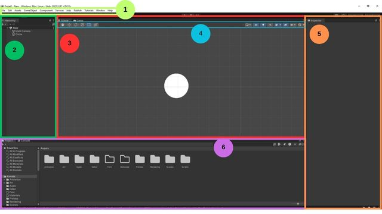

Voici un résumé des bases que vous apprendrez dans l'exercice au bas de la page.
Pour créer un nouveau projet dans Unity, on doit passer par le Unity Hub. Une fois que celui-ci est ouvert, assurez-vous d'être dans la section Projects du Hub. Ensuite, appuyez sur le bouton bleu New project.
Quelques paramètres sont à modifier dans la fenêtre qui s'ouvre:
Voici un aperçu des types de projets disponibles:
2D (core) et 3D (core) sont respectivement pour les projets en 2D ou 3D. Ils utilisent la méthode de rendu par défaut de Unity.
2D (URP) et 3D (URP) sont aussi pour des projets en 2D ou 3D, leur méthode de rendu par défaut se nomme Universal Render Pipeline. Cette méthode de rendu est personnalisable et permet de créer des graphiques optimisés.
3D (HDRP) est la méthode que nous utiliserons pour la VR. La méthode de rendu est plus performante et a une meilleure résolution, mais elle est plus longue à traiter.
Il existe d'autre modèles, mais nous utiliserons principalement ceux ci-haut.
Explorons l'interface de Unity.
1. Barre de menu
Ici, vous pourrez sauvegarder votre projet, créer des objets, faire apparaître de nouvelles fenêtres...
2. Fenêtre Hierarchy
Cette fenêtre contient une liste de tous les objets présents dans la scène ouverte dans la fenêtre Scene. C'est ici que vous gérer la hiérarchy de vos objets à la manière de calques.
3. Fenêtre Scene
Cette fenêtre vous permet d'éditer votre jeu ainsi que de le tester lorsque vous allez dans l'onglet Game. La fenêtre Scene montre une scène (un niveau) à la fois.
4. Barre d'outils
Ici, vous trouverez les outils nécessaires pour modifier les objets de la fenêtre Scene.
5. Fenêtre Inspector
Cette fenêtre permet d'afficher les composantes des objets présents dans la Scene et de modifier leurs paramètres.
6. Fenêtre Project
La fenêtre Project contient toutes les ressources externes que vous avez importé dans votre projet. Elle fonctionne à la manière d'un explorateur de fichiers pour vous permettre de classer vos ressources.
Lorsque vous créez un nouveau projet, je vous conseille de tout de suite créer les dossiers suivants dans votre fenêtre Project. Ainsi, vous pourrez classer vos ressources dès que vous les importez:
Unity a un magasin nommé le Asset Store qui nous permet d'ajouter des objets 2D, 3D, des scripts et des matériaux à nos projets. Bien que vous deviez créer tous les assets de vos projets, il pourrait arriver que vous ayez à télécharger des Assets depuis le magasin. Vous devrez premièrement, trouvez une ressource dans le magasin, puis ensuite utiliser le Package Manager de Unity pour importer les ressources dans votre projet. Pour ce faire, suivez la procédure suivante: